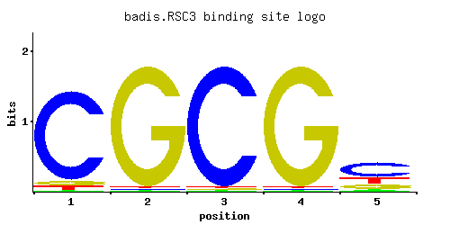
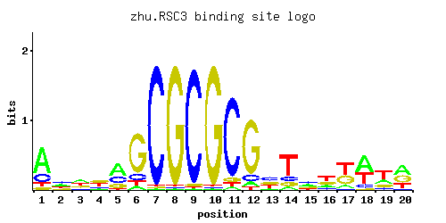
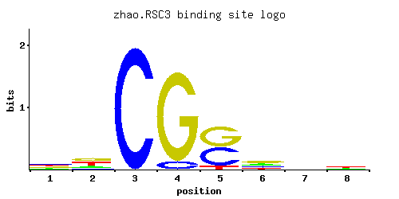

Component of the RSC chromatin remodeling complex; essential gene required for maintenance of proper ploidy and regulation of ribosomal protein genes and the cell wall/stress response; highly similar to Rsc30p
01 / RECOMMENDED MATRIX
Best-performing DNA-binding model. Fisher’s P-value No data
Information content 9.11
Max PWM score 7.78
Recommended cutoff 7.73
View and copy the recommended matrices ↘ Position frequency matrix (PFM) Copy
A | 0.01 0.01 0.01 0.01 0.06
C | 0.90 0.01 0.97 0.01 0.56
G | 0.05 0.97 0.01 0.97 0.18
T | 0.04 0.01 0.01 0.01 0.20
Position count matrix (PCM) Copy
A | 1 1 1 1 6
C | 90 1 97 1 56
G | 5 97 1 97 18
T | 4 1 1 1 20
Position weight matrix (PWM) Copy
A | -3.47 -3.47 -3.47 -3.47 -1.67
C | 1.61 -2.89 1.68 -2.89 1.13
G | -1.28 1.68 -2.89 1.68 0.00
T | -2.08 -3.47 -3.47 -3.47 -0.47
02 / COMPARATIVE BENCHMARKS
Alternative candidate matrices 3 Historical matrix candidates from the original ScerTF database. Expand a source to inspect its original logo, scores, and matrix values.
RSC3 Badis et. al. P = No data View matrix ↘ 
Fisher’s P-value No data
Information content 9.11
Max PWM score 7.78
Recommended cutoff 5.84
Position frequency matrix (PFM) Copy
A | 0.01 0.01 0.01 0.01 0.06
C | 0.90 0.01 0.97 0.01 0.56
G | 0.05 0.97 0.01 0.97 0.18
T | 0.04 0.01 0.01 0.01 0.20
Position count matrix (PCM) Copy
A | 1 1 1 1 6
C | 90 1 97 1 56
G | 5 97 1 97 18
T | 4 1 1 1 20
Position weight matrix (PWM) Copy
A | -3.47 -3.47 -3.47 -3.47 -1.67
C | 1.61 -2.89 1.68 -2.89 1.13
G | -1.28 1.68 -2.89 1.68 0.00
T | -2.08 -3.47 -3.47 -3.47 -0.47
RSC3 Zhu et. al. P = No data View matrix ↘ 
Fisher’s P-value No data
Information content 16.04
Max PWM score 18.57
Recommended cutoff 13.93
Position frequency matrix (PFM) Copy
A | 0.22 0.50 0.34 0.46 0.44 0.15 0.62 0.25 0.04 0.04 0.01 0.01 0.01 0.01 0.08 0.04 0.34 0.23 0.21 0.09
C | 0.34 0.17 0.03 0.36 0.24 0.18 0.13 0.27 0.80 0.05 0.97 0.02 0.97 0.01 0.74 0.19 0.36 0.22 0.13 0.06
G | 0.03 0.11 0.12 0.05 0.15 0.35 0.15 0.39 0.09 0.89 0.01 0.96 0.01 0.97 0.11 0.28 0.16 0.14 0.34 0.21
T | 0.41 0.21 0.51 0.12 0.17 0.31 0.09 0.09 0.07 0.03 0.01 0.01 0.01 0.01 0.07 0.48 0.14 0.40 0.33 0.65
Position count matrix (PCM) Copy
A | 22 50 34 46 44 15 62 25 4 4 1 1 1 1 8 4 34 23 21 9
C | 34 17 3 36 24 18 13 27 80 5 97 2 97 1 74 19 36 22 13 6
G | 3 11 12 5 15 35 15 39 9 89 1 96 1 97 11 28 16 14 34 21
T | 41 21 51 12 17 31 9 9 7 3 1 1 1 1 7 48 14 40 33 65
Position weight matrix (PWM) Copy
A | -0.37 0.45 0.06 0.36 0.32 -0.76 0.66 -0.25 -2.08 -2.08 -3.47 -3.47 -3.47 -3.47 -1.39 -2.08 0.06 -0.33 -0.42 -1.27
C | 0.64 -0.06 -1.79 0.69 0.29 0.00 -0.33 0.41 1.49 -1.28 1.68 -2.20 1.68 -2.89 1.41 0.05 0.69 0.20 -0.33 -1.10
G | -1.79 -0.49 -0.41 -1.28 -0.18 0.66 -0.18 0.77 -0.69 1.60 -2.89 1.67 -2.89 1.68 -0.49 0.44 -0.12 -0.25 0.64 0.15
T | 0.25 -0.42 0.47 -0.98 -0.63 -0.03 -1.27 -1.27 -1.52 -2.37 -3.47 -3.47 -3.47 -3.47 -1.52 0.41 -0.83 0.22 0.03 0.71
RSC3 Zhao and Stormo P = No data View matrix ↘ 
Fisher’s P-value No data
Information content 6.183
Max PWM score 7.14
Recommended cutoff 5.36
Position frequency matrix (PFM) Copy
A | 0.192 0.192 0.001 0.001 0.001 0.237 0.236 0.261
C | 0.353 0.110 0.997 0.084 0.440 0.215 0.261 0.246
G | 0.197 0.356 0.001 0.914 0.482 0.399 0.208 0.182
T | 0.259 0.342 0.001 0.001 0.077 0.150 0.295 0.310
Position count matrix (PCM) Copy
A | 19 19 0 0 0 23 23 26
C | 35 11 99 8 44 21 26 24
G | 19 35 0 91 48 39 20 18
T | 25 34 0 0 7 15 29 31
Position weight matrix (PWM) Copy
A | -0.51 -0.51 -5.77 -5.77 -5.77 -0.30 -0.30 -0.20
C | 0.67 -0.49 1.71 -0.76 0.89 0.18 0.37 0.31
G | 0.09 0.68 -5.19 1.62 0.98 0.80 0.14 0.01
T | -0.21 0.07 -5.77 -5.77 -1.42 -0.76 -0.08 -0.03
03 / EXPERIMENTAL CONTEXT
Gene-level annotations and interactions. Genes bound in ChIP-chip experiments 1 genes No Data
Genes affected by TF deletion 1 genes No Data
Genes supported by both experiments 1 genes No Data
Predicted TF–TF partners 20 genes CAT8, GCN4, GIS1, GSM1, HAP2, HAP4, IME1, MSN4, NHP10, NRG1, PDR1, RDR1, RGM1, RTG3, SKN7, STP1, SUT1, UME6, USV1, YER184C
Explore 20 original interaction plots →